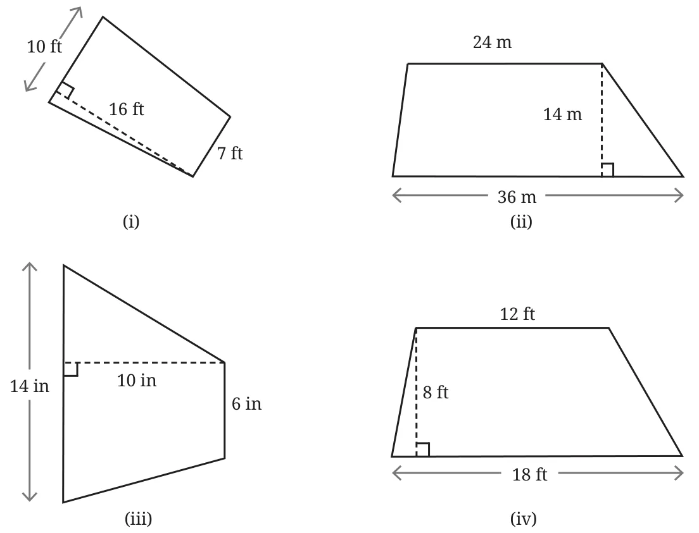
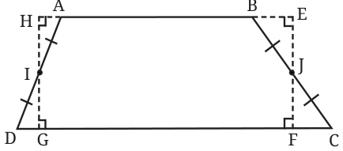
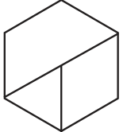
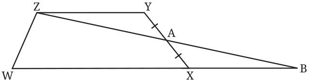

- Find the area of a rhombus whose diagonals are 20 cm and 15 cm.
- Give a method to convert a rectangle into a rhombus of equal area using dissection.
- Find the areas of the following figures:

- [Śulba-Sūtras] Give a method to convert an isosceles trapezium to a rectangle using dissection.
- Here is one of the ways to convert trapezium ABCD into a rectangle EFGH of equal area —

Given the trapezium ABCD, how do we find the vertices of the rectangle EFGH?
[Hint: If \(\triangle \text{AHI} \cong \triangle \text{DGI}\) and \(\triangle \text{BEJ} \cong \triangle \text{CFJ}\), then the trapezium and rectangle have equal areas.]
- Using the idea of converting a trapezium into a rectangle of equal area, and vice versa, construct a trapezium of area 144 cm\(^2\).
- A regular hexagon is divided into a trapezium, an equilateral triangle, and a rhombus, as shown. Find the ratio of their areas.

- ZYXW is a trapezium with \(\text{ZY} \parallel \text{WX}\). A is the midpoint of XY. Show that the area of the trapezium ZYXW is equal to the area of \(\triangle \text{ZWB}\).
